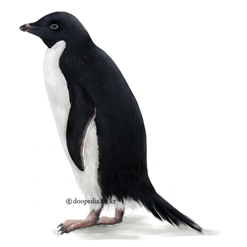

학명: Pygoscelis adeliae

계: 동물
문: 척삭동물
강: 조류
목: 펭귄목
과: 펭귄과
멸종위기등급: 관심대상(LC : Least Concern, 출처 : IUCN)
크기: 약 75cm
몸의 빛깔: 검정색(윗면), 흰색(아랫면)
생식: 난생(1회에 2개)
생활양식:무리 생활
분포지역: 남극대륙 및 연안 섬
몸길이 약 75cm이다. 짧은 다리로 곧추 서고 날개는 지느러미 모양으로 변화되었다. 머리와 등은 짙은 검정색이고 가슴과 배는 흰색이다. 눈둘레는 흰색이다. 부리는 짧고 검붉다. 번식기 외에는 얼지 않은 물에서 물고기나 낙지 등을 잡아먹는다. 9∼10월에는 번식지로 돌아와 돌로 둥지를 만들고 떼지어 번식하는데, 한배에 2개의 알을 낳고 암수가 교대로 약 36일 동안 품는다. 새끼를 다 키운 뒤인 2∼3월에는 다시 얼지 않은 물로 찾아간다. 남극대륙 및 연안의 섬에 분포한다. [네이버 지식백과] 아델리펭귄 [Adelie penguin] (두산백과)